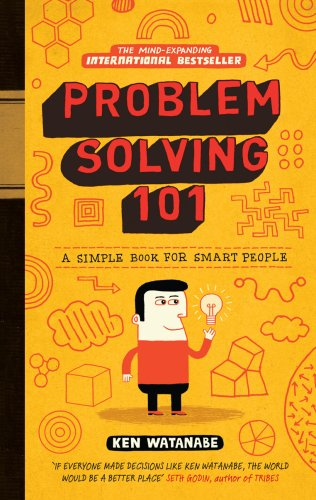

Problem Solving 101, by Watanabe
Sunday October 18, 2020
This book by a former McKinsey consultant "started as a simple guide to teach Japanese schoolchildren critical thinking skills." It's a different perspective than the more math-focused How to Solve It, for example, focusing on problems of everyday life.
Watanabe's steps:
- "understand the current situation"
- "identify the root cause of the problem"
- "develop an effective action plan"
- "execute until the problem is solved, making modifications as necessary"
Pólya's steps:
- First, you have to understand the problem.
- After understanding, make a plan.
- Carry out the plan.
- Look back on your work. How could it be better?
From these we learn that five steps is too many steps.
Watanabe emphasizes a number of visual aids:
- "Logic tree" - break something down into sub-groups, exhaustively
- "Yes/no tree" - a logic tree with yes/no logic, drawn as a flowchart
- "Problem-solving design plan" - columns for Issue, Hypothesis, Rationale, Analysis/Activities, Information Source (mostly about understanding the problem)
- "Hypothesis pyramid" - Boxes with arrows to show (possible) contributing factors for a conclusion, both for plausible reasoning and for deductive reasoning as appropriate
- "Pros and cons; Criteria and evaluation" - Tables with various structure for pros and cons
A couple times he also uses quadrant charts where the axes are impact and effort (for prioritizing). An interesting variation is that he has his characters think about how to change the required effort by asking friends for help, etc.
Selected quotes and (very rarely) comments
"Being a problem solver isn't just an ability; it's a whole mind-set, one that drives people to bring out the best in themselves and to shape the world in a positive way." (page ix)
"... approaches to broaden and organize one's thinking ..." (page x)
"Problem solving isn't a talent limited to the lucky few. It's actually a skill and a habit that you can learn." (page 4)
"People often fall into the trap of collecting information and conducting analyses just for the sake of doing them." (page 38)
"If you start collecting and analyzing data without first clarifying the question you are trying to answer, you're probably doing yourself more harm than good." (page 39)
"As Seneca said, "Luck is what happens when preparation meets opportunity."" (page 109)
That quote is disputed.
